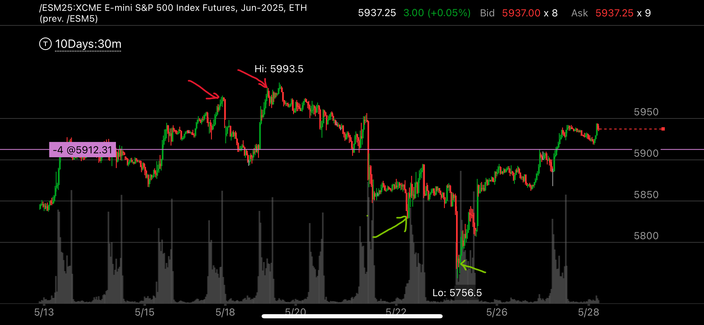

没有加速，但是出现了相对弱势
- 如果大盘出现了超买或者超卖， 但是并没有出现加速动作，但是出现了相对弱势，这时常常会大幅回调，
- 这种大幅回调，也不需要加速来结束，而是用相对弱势来结束
- 这种模式不容易把握，可以跳过不做，但是要识别它，不要误认为它反转了。

图示:
- 两个红色箭头，上涨相对弱势，但是没有明显的加速动作，第二个高点只比第一个高点高很少的一点点。但是要比第二个高点下落的慢很多。
- 两个绿色箭头，下跌相对弱势，第二个相对弱势，没有加速下跌，但是它在底部停留时间更长，所以它上涨了，而且必须超过5895点，也就是第一个
绿色箭头上涨的高点。